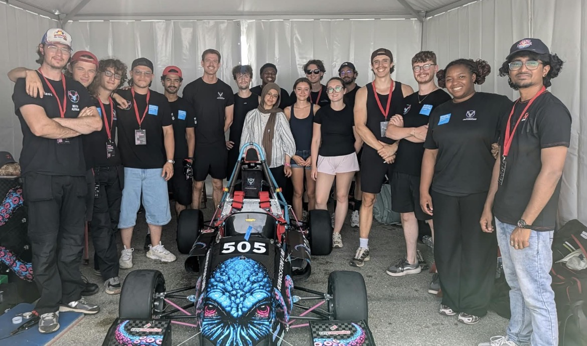
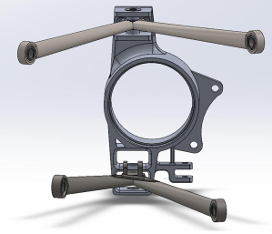
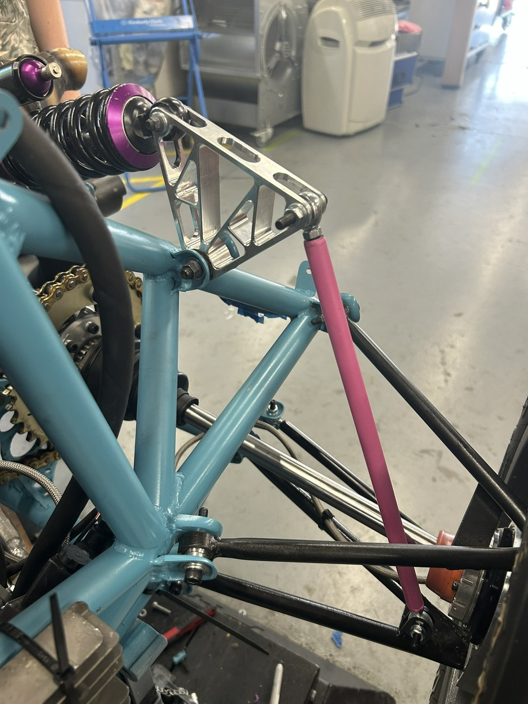
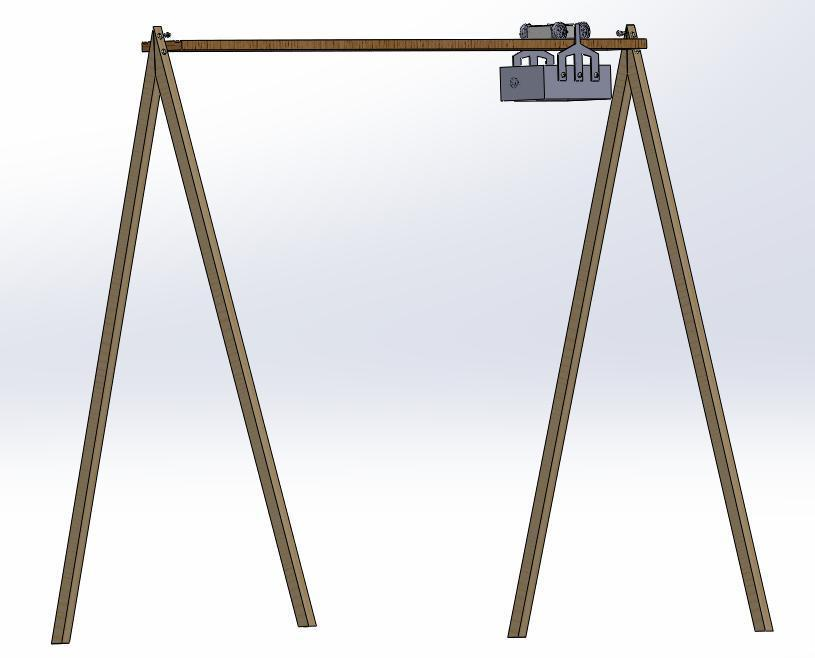
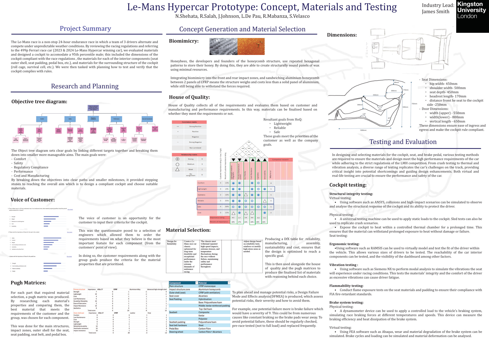
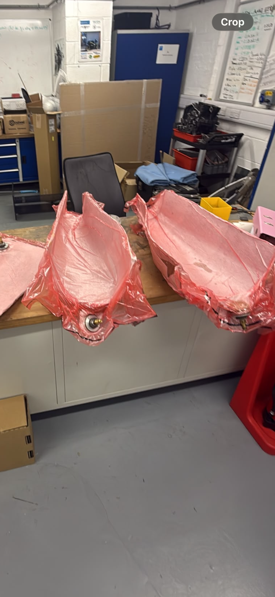

Project Mentor, Nanorobots Competition
UCL Ingenium
Mentored participants in programming and working with nanocontrollers for the Nanorobots competition.
Interdisciplinary Engineer and STEM Advocate
Mission 44 Scholar | Cohort 3, Royal Academy of Engineering
About me
I'm an enthusiastic, versatile engineer who enjoys working across disciplines and taking part in interdisciplinary projects. I value the breadth of knowledge each person brings to a team and advocate for STEM careers because they can positively impact people's lives.
I'm detail-oriented and have developed my engineering leadership through my role as Team Principal in Formula Student. A thorough understanding of engineering fundamentals has helped me transfer knowledge within Formula Student and contribute in mentoring roles at UCL Ingenium.
I truly love engineering. It is fast-paced and calls for ambition, resilience, and adaptability, qualities that make me a great engineer.
I am a Cohort 3 Mission 44 Scholar with the Royal Academy of Engineering.

Selected work
Select a project card to expand its details.

Compared 0%, 15%, and 30% anti-squat geometries using vehicle-dynamics simulation and structural analysis.
Role: Suspension and Vehicle Dynamics Engineer
Developed the product design specification and designed rear-suspension geometries for 0%, 15%, and 30% anti-squat. Set up IPG Kinematics and CarMaker simulations, and wrote a MATLAB 6×6 load-distribution model to calculate forces in the six suspension links.
Designed the T45 steel wishbones and 7075-T6 aluminium upright, validated them with ANSYS FEA, and topology-optimised the upright, reducing its mass by about 60% while maintaining a factor of safety of at least 2.
The dissertation evaluated 0%, 15%, and 30% anti-squat using kinematic modelling, vehicle-dynamics simulations, and FEA. The 15% setup gave the most controlled overall response. Structural results showed a maximum deformation of 0.5 mm and a minimum factor of safety of 2; topology optimisation reduced upright mass by about 60%.

Developing a compact rotary inverted pendulum control system.
Role: Project developer
Currently developing a compact rotary inverted pendulum control system, with a focus on mechanical design and manufacture.

Small-scale portable lifting structure designed around a 1 kg load, with analytical design, CAD, and finite element analysis.
Role: Individual mechanical design project
Developed the concept and design requirements for a portable gantry crane targeting a 1 kg load, at least 0.7 m of hoist travel, and a trolley speed of about 0.30 m/s. Compared concepts using decision matrices, completed standards-informed component calculations, selected and costed components, modelled the assembly in SolidWorks, and assessed load-critical components with static, buckling, and transient FEA.
Finite element analysis predicted a maximum beam deflection of up to 0.9 mm. The trolley speed analysis estimated 0.314 m/s, exceeding the 0.30 m/s design target.

Team concept work in collaboration with JLR, covering cockpit sizing, material choices, impact-zone design, and a testing strategy.
Role: JLR collaboration team member
Collaborated with a six-person team on a regulation-compliant Le Mans Hypercar cockpit concept and material strategy. The team used customer requirements, a House of Quality, Pugh matrices, and DFMEA to guide cockpit component and impact-zone design decisions.
The team developed a cockpit concept sized for a 95th-percentile male, selected materials for the cockpit components and CFRP/aluminium-honeycomb impact zones, and outlined a validation plan spanning virtual and physical assessment.

Personally designed and manufactured a 600 g pair of Formula Student sidepods using a glass-fibre mould and prepreg lay-up.
Role: Sidepod designer and manufacturer
I designed the sidepods and selected the manufacturing method. I 3D-printed the sidepods, then created a glass-fibre mould from them. After curing, I post-processed the mould and completed a prepreg lay-up inside it. I added rubber trim to the finished edges to meet the rules.
The finished pair weighed 600 g in total and became the lightest, most functional, and best-finished sidepods Kingston Racing had produced to date.
Community
Mentoring, student support, and STEM outreach.
UCL Ingenium
Mentored participants in programming and working with nanocontrollers for the Nanorobots competition.
UCL Ingenium
Mentored participants on Classroom in a Crate, a project focused on structural and product design.
Driven by Us
Volunteer member contributing to Driven by Us activities.
Since 2025
Supporting STEM engagement through ambassador and outreach activities.
Kingston University | With Dr Constance
Hosted the Mechanical Engineering Future Skills Day with Dr Constance.
Kingston University | With Professor Cruz Santiago
Support first-year students through the Navigate module, helping them settle into university and find their way through their first year.
Education
University: University College London
Expected: Distinction
Advanced Computer Applications, Materials, Group Design, and Project Management
Control and Robotics, Thermodynamics and Turbomachinery, and Data-Driven Methods
University: Kingston University London
Study period: September 2023 – June 2026 | Full-time, three-year programme
The Higher Education Achievement Report records the qualification as a Bachelor of Engineering with Honours in Mechanical Engineering.